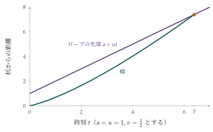

STEP II 2018、第10問
先に進む前に問題を読んでおこう。問題は STEP Support Programme の問題データベースにある： step.maths.org/questions/18-s2-q10
導入
長さ 1 キロメートルのゴムのロープの上を、1 匹の蟻が毎秒 1 センチメートルの速さで歩き始める。ロープは 1 秒ごとに、さらに 1 キロメートルずつ一様に引き伸ばされる。ロープの先端は毎秒 1000 メートルという、蟻の 10 万倍の速さで遠ざかっていく。蟻はいつか先端にたどり着けるだろうか。
驚くべきことに、答えは「たどり着ける」である。引き伸ばしは蟻も一緒に運んでいく。ロープ全体に対する蟻の進み具合を割合で見ると、その増え方は小さくなっていくが、それらの割合を足し合わせたものは調和級数（harmonic series）のように振る舞い、調和級数は発散する（diverge）のである（第 2.3 節）。蟻は到着する。ただし、それは宇宙の年齢すらかすむほどの時間が経ったあとである。この問題では連続版を厳密に解き、到着までの時間が速さの比について指数関数的に増大することを示す。
取りかかる前に
紐は一様に引き伸ばされる。つまり、紐のどの部分も同じ倍率で伸びる。時刻 \(t\) における紐の長さは \(a + ut\) である。杭から距離 \(x\) の位置にある点が、全長の \(\frac{x}{a + ut}\) の割合のところにあるとすると、その点はどれだけの速さで動くか。
紐の上の各点は、全長に対して常に同じ割合 \(f\) の位置にあるので、杭からの距離は \(f(a + ut)\) であり、その速さは \(fu = \frac{ux}{a + ut}\) である。杭に近い点はほとんど動かず、先端は速さ \(u\) で動く。
順を追って解く
段階 1 蟻の方程式
蟻は紐に対して速さ \(v\) で動き、さらにその下にある紐の速さが加わる： \[\frac{\mathrm{d}x}{\mathrm{d}t} = v + \frac{ux}{a + ut}.\]
\(\frac{x}{a + ut}\) を商の微分法（quotient rule）で微分し、\(\dot x\) の式を用いよ。
\[\frac{\mathrm{d}}{\mathrm{d}t}\Bigl(\frac{x}{a + ut}\Bigr) = \frac{\dot x}{a + ut} - \frac{ux}{(a + ut)^2} = \frac{1}{a + ut}\Bigl(v + \frac{ux}{a + ut}\Bigr) - \frac{ux}{(a + ut)^2} = \frac{v}{a + ut}. \qed\] 蟻が進んだ紐の割合は \(\frac{v}{a + ut}\)、すなわち蟻自身の速さを現在の長さで割ったものの割合で増加する。引き伸ばしは完全に消えてしまう。引き伸ばしは誰の割合も変えないからである。
段階 2 先端への到達
\(0\) から \(t\) まで積分せよ。割合が \(1\) になるのはいつか。
蟻は杭から出発するので、 \[\frac{x}{a + ut} = \int_0^t\frac{v\,\mathrm{d}s}{a + us} = \frac vu\ln\frac{a + ut}{a}.\] 蟻が先端に到達するのは割合が \(1\) になるときである。\(\ln\frac{a + uT}{a} = \frac uv = k\) より \(a + uT = ae^k\)、すなわち \[uT = a(e^k - 1). \qed\] 対数（logarithm）は限りなく大きくなるので、ロープがどれほど速く引き伸ばされても、蟻は必ず到着する。
段階 3 帰り道
帰り道では、紐に対する蟻の速さは \(-v\) である。このとき割合の変化率はどうなるか。蟻は時刻 \(T\) に割合 \(1\) の位置から出発する。
\(-v\) として同じ計算を行うと \(\frac{\mathrm{d}}{\mathrm{d}t}\bigl(\frac{x}{a + ut}\bigr) = -\frac{v}{a + ut}\) となるので、 \[\frac{x}{a + ut} = 1 - \frac vu\ln\frac{a + ut}{a + uT}.\] 割合が \(0\) になるのは \(a + ut = (a + uT)e^k\) のときである。\(a + uT = ae^k\) であるから、帰りにかかる時間は \[t - T = \frac{(a + uT)(e^k - 1)}{u} = \frac{ae^k\cdot uT/a}{u} = Te^k. \qed\] 帰り道には行きの \(e^k\) 倍の時間がかかる。蟻が折り返す時点で、紐は最初の \(e^k\) 倍の長さになっているからである。

振り返り
適切な変数を使う。ロープのうち進んだ割合こそが自然な量であった。引き伸ばしはこれを変えないからである。
姿を変えた積分因子。\(\frac{1}{a + ut}\) を掛けることで、線形微分方程式（linear differential equation）がある関数の導関数そのものの形になった。これは積分因子（integrating factor）の方法にほかならない。
発散は速さに勝る。割合は対数のように増加し、対数は有界でないので、蟻は必ず到着する。
背後にある数学
調和級数による設定
このパズルは、ふつう離散的な引き伸ばしの形で語られる。ロープの長さは \(1\) km で、蟻は最初の 1 秒で \(1\) cm 歩く。次にロープが \(1\) km 引き伸ばされ、蟻はまた \(1\) cm 歩く。以下同様である。\(n\) 秒目に蟻は長さ \(n\) km のロープのうち \(1\) cm、すなわち割合 \(\frac{1}{100\,000\,n}\) だけ進む。引き伸ばしは割合を変えないので、\(N\) 秒後に蟻が進んだのはロープ全体の \[\frac{1}{100\,000}\Bigl(1 + \frac12 + \frac13 + \cdots + \frac1N\Bigr) \approx \frac{\ln N + 0.577}{100\,000}\] である。蟻が到着するのは \(H_N \approx 100\,000\) となるとき、すなわち約 \(e^{100\,000}\) 秒後であり、これは \(43\,000\) 桁を超える数である。（比較のために言えば、宇宙の年齢は約 \(4 \times 10^{17}\) 秒である。）連続版の答えもこれと合致する。\(k = \frac uv = 100\,000\) であり、\(T \approx \frac aue^k\) となる。
膨張する宇宙の中の光
ロープの上の蟻は、膨張する宇宙を横切る光のモデルである。遠方の銀河は空間そのものの膨張に運ばれて我々から遠ざかり、それらの銀河からの光は、蟻が伸びていくロープの上を歩くように、膨張する空間の中を速さ \(c\) で我々に向かって進む。遠方の銀河からの光がいつか我々に届くかどうかは、膨張率が時間とともにどう変化するかによる。ロープのように一定の割合で膨張する宇宙では、光はいつか必ず届く。我々の宇宙がそう見えるように膨張が加速する宇宙では、その光が決して我々に届かない銀河が存在する。すなわち宇宙の事象の地平面（cosmic event horizon）が存在するのである。蟻の場合にこれに相当するのは、先端の速さが長さに比例して増えるように指数関数的に引き伸ばされるロープである（演習問題で試してみよ）。
このパズルは、1972 年にフランスの数学者 Denys Wilquin がゴムバンドの上の芋虫という形で考案したものらしい。そしてマーティン・ガードナー（Martin Gardner）が Scientific American 誌のコラムや著書 Time Travel and Other Mathematical Bewilderments（『タイムトラベルとその他の数学的困惑』）で紹介し、広く知られるようになった。直観に反するにもかかわらず証明は容易な結果の例として最もよく知られたものの一つであり、調和級数の発散を示す例として好んで用いられている。
思考のスキル
問題のある部分（ここでは引き伸ばし）がすべてを変えてしまうときには、それが変えずに残す量を探せ。
引き伸ばしはあらゆる距離を変えるが、割合は一切変えない。割合を使って考えることで、問題から引き伸ばしが取り除かれた。大学では、この考え方は宇宙論や流体力学における共動座標（comoving coordinates）として現れ、より一般には、変換のもとでの不変量（invariant）の探求として現れる。
次の一歩
中間地点。蟻がロープの中間地点にいるのはいつか。それは時刻 \(\frac T2\) より前か後か。
指数関数的な引き伸ばし。代わりに、ロープの長さが \(ae^{\lambda t}\) であるとする。蟻が先端に到達するのは \(v > \lambda a\) のときに限ることを示せ。（これが宇宙の事象の地平面である。）
加速するロープ。長さが \(a + \frac12bt^2\) のとき、蟻は必ず到着するか。
離散版のパズル。離散版において、蟻がロープの \(1\%\) を進むのに何秒かかるか。\(H_N \approx \ln N + 0.577\) を用いよ。
さらに学ぶために
Martin Gardner, Time Travel and Other Mathematical Bewilderments（W. H. Freeman）。ゴムのロープの上の蟻の話を収録している。
Julian Havil, Gamma: Exploring Euler’s Constant（Princeton University Press）。オイラー定数を探る本。調和級数と蟻の話を扱っている。
Barbara Ryden, Introduction to Cosmology（Cambridge University Press）。膨張する空間、地平面、共動座標を学部レベルで解説している。